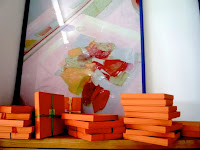
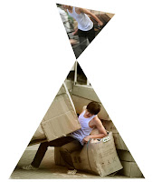
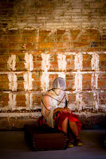
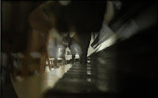
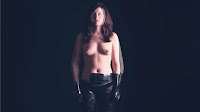
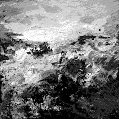
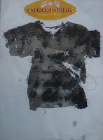
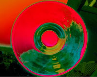
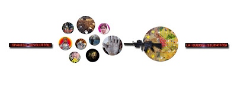

La Galería O+O en Estampa 2012
miércoles, 24 de octubre de 2012
La Galería O+O presenta en la Feria de Estampa en Matadero, stand C-3,video y fotografía "Metrópolis":Una reflexión sobre la ciudad contemporánea
SERGIO BELINCHÓN (Valencia 1971) , vive y trabaja en
Berlín
De la mano del artista valenciano afincado en Berlín Sergio Belinchón,
nos adentraremos en "Metrópolis" una cuidada serie formada por diversas
fotografías y videocreaciones que corroboran la fascinación que este artista
siente por la arquitectura y sus rituales y por la reflexión e investigación en
torno a los espacios urbanos: “Estos pequeños retratos aportan diferentes
significados a la ciudad; la suma de todos ellos ofrece una mirada extensa
sobre la relación entre ciudad contemporánea y el individuo”, comenta el
artista.
En sus imágenes, el espacio público se convierte en un gran escenario
en donde las personas parecen actores en un inmenso decorado. “Intento reflejar
en estos trabajos cómo el espacio público puede definir el comportamiento de la
gente que lo utiliza y también cómo el carácter de un espacio se puede ver
modificado por el uso que se hace de él.”
{kind=link}
Con numerosos reconocimientos y premios, Beca Velázquez, Künstlerhaus
Bethanien, Taipei artist village, Academy en Rome, Colegio de España París,
Endesa artist Grant, Generación, 2002 -2005 honorific mention, Contemporany Art
Prize`L`Oreal, forma parte de las más importantes colecciones privadas y públicas, Museo Nacional Reina Sofia, Museo Artium, Musac, Comunidad de Madrid,
Ministerio de Cultura, Ministerio de Exteriores, Fondo Nacional de arte
europeos France, Fundación Coca Cola, Patio Herreriano Museum, Fhisher
Gallery, Los Angeles EE.UU. Fundación Telefónica, etc...sus obras forman parte
de la historia de la fotografía española.
PATIO DE
BUTACAS (2005-2006) de RAÚL BELINCHÓN es un trabajo
fotográfico sobre interiores de espacios arquitectónicos. Es un recorrido por
los diferentes cines, teatros y auditorios de ciudades del mundo. De Moscú a
París, de Londres a Madrid, de Tokio a Milán, De San Petersburgo a Barcelona,
de Osaka a Valencia, pasando por los teatros de Broadway en Nueva York. Salas
antiguas y modernas, distintas formas y tipologías. Otra manera de mirar los
teatros, sin espectadores, sin actores, resaltando sus pequeños y
característicos detalles.
{kind=link}
Raúl observa el espacio fuera de su uso
habitual, donde cobra una dimensión diferente en la que su arquitectura con
todos sus detalles estructurales y estéticos pasan a ser protagonistas. La gran
mayoría de las imágenes están tomadas desde un mismo punto de vista, desde el
escenario hacia el patio de butacas. Obteniendo así, unos resultados mucho más
sugerentes, abstractos e irreales y logrando una uniformidad del conjunto de
las imágenes seleccionadas. Resaltar el punto de vista que tiene el actor o
músico cuando sube a un escenario, es mucho más inquietante e inusual, que el
que pueda tener un espectador que va a ver un espectáculo o un film.
Un trabajo sobre la gente, la masa y lo
colectivo, pero sin mostrar físicamente al individuo. Hay una ausencia de
presencia humana para potenciar otros muchos valores (sueños e imaginación,
frente a lo real y cotidiano). La ausencia de público es innegable, pero cada
butaca hace referencia a una persona o a miles de personas que pasaron por
allí. El mar de butacas es la ausencia de las personas que tiempo atrás
estuvieron allí en ese patio de butacas, sumergiéndose en la oscuridad y el
silencio colectivo, para dar paso a la experiencia individualizada.
CLAUDIA BONOLLO
Arquitecta veneciana que funda en 2002 en Madrid L`Atelier Meta-Morfhic, con importante trabajo de investigación del color, seminarios talleres y espacios arquitectónicos sensoriales, con una gran trayectoria de investigación a través del arte y otras disciplinas en las nuevas tecnologías.
Arquitecta veneciana que funda en 2002 en Madrid L`Atelier Meta-Morfhic, con importante trabajo de investigación del color, seminarios talleres y espacios arquitectónicos sensoriales, con una gran trayectoria de investigación a través del arte y otras disciplinas en las nuevas tecnologías.
Los tres trabajos que presenta en Estampa´, una investigación multimedia del cuerpo imaginado
Este trabajo se propone crear a través del arte y otras disciplinas un punto de vista sobre el cuerpo humano.
Este trabajo se propone crear a través del arte y otras disciplinas un punto de vista sobre el cuerpo humano.
Células transfiguradas, espacios -sensibles, narraciones cromáticas
{kind=link}

aplicadas a los órganos y a las emociones.
Presenta
1-cuadernos celulares
1-cuadernos celulares
2-Caja de artista con espacios sensibles.
3"Espacio sináptico" Impresión digital sobre metacrilato.´
VIDEOS, FOTOGRAFÍA, ARTE DIGITAL E INSTALACIÓN
{kind=link}
La Galería O+O , presenta la fotografía Intervenida sobre el deshielo de los glaciares de la artista suiza afincada en Madrid NICOLE HERZOG, donde expresa su preocupación por el estrago que el cambio climático y la acción del hombre, acelera la desaparición por el deshielo de los glaciares de su natal Suiza.
Apostando por la fotografía de
INÉS RAMSEYER
"Mi formación de arquitecta condiciona mi visión de las cualidades del espacio y de las diferentes escalas.
Entiendo que tanto la arquitectura como la fotografía usan recursos parecidos para construir espacios: trabajan con la luz y las sombras.
Como arquitecta me interesa la producción del espacio arquitectónico que tenga unas cualidades tales que pueda aportar valores, emoción, conectar con símbolos. También me interesa la materialidad de las superficies y los límites del espacio... y aquí está la conexión con mi trabajo fotográfico.
Como fotógrafa me interesa explorar las formas de mirar el entorno. Investigo situaciones donde la ausencia de una escala gráfica identificable puede motivarnos a bucear en nuestro interior y jugar a interpretaciones de acuerdo a nuestro mundo".
{kind=link}
MARTA MARTÍNEZ
Presenta
su trabajo de investigación del agua, donde su trabajo se centra, en
los reflejos que en unas minúsculas gotas de agua cabe el reflejo del
Universo, del entorno que les rodea, recoge en un vasto trabajo sobre
este tema, gotas, charcos reflejos de edificios y de la naturaleza allá
donde está el agua.Un trabajo de años, que refleja y expresa a través
del agua la relación de las cosas a través como en un espejo de lo que
le rodea.Una obra sólida y amplia de años de investigación del elemento
agua.
{kind=link}
YVO LÁZARO
{kind=link}

Sorprende su habilidad para redibujar la realidad. Lleva el medio fotográfico al lugar donde nace y vive la imaginación. En sus imágenes, el agua puede transformarse, en aire o en luz con gran dominio de lirismo visual. Ouka Leele describe sus ojos como raptores de albas alquímicas.
ENRIFORTIZ
{kind=link}
Los impactantes efectos lumínicos y cromáticos logrados, que fusionan pintura y fotografía, son el resultado de una trabajada y depurada técnica, fruto de una selección y combinación de actividades plásticas como el óleo, acrílico, grabado, fusing “vidrio”, fotografía, etc.
Los vídeos del grupo ENCUADRANDO ENCUENTROS. por SALVALORÉN, SABINE FELDEN Y JULIA QUINTANA.
 |
| Salvalorén |
{kind=link}
 |
| Sabine Felden |
{kind=link}
 |
| Julia Quintana |
{kind=link}
El arte digital de:
JUAN CARLOS JULIÁN
{kind=link}

"Las obras que presento son una selección de la Colección que constituye un Proyecto basado en la Naturaleza, entendida en su sentido más amplio. Desde sus Elementos (tierra, agua, fuego y viento) hasta la más sencilla roca, son representados de una manera abstracta, fruto de la conjunción entre los medios técnicos que dispongo y de una visión íntima y personal de la naturaleza".EDUARDO LARRASA
{kind=link}

Inquietante y hermosa, la obra de Eduardo Larrasa, discurre toda ella desde los interrogantes que hacen de nuestro mundo un escenario cada vez más insólito y extraño. Sus vehículos expresivos son varios: el dibujo, la pintura, la instalación, la escultura, el grabado… Juega con la luz y la sombra, con la interposición de cuerpos translúcidos y opacos. Vidrio, metacrilato, hierro, plomo, paja, carbón, papel... sus creaciones resultantes parecen alargarse, contraerse, latir... una obra emocional, expresiva y un tanto provocativa, que se encuentra más cerca de la abstracción que del arte figurativo.
CONSUELO CARDENAL
{kind=link}

Todo el trabajo de Consuelo Cardenal refleja su filosofía de vida, vemos que sus obras saltan de un estímulo a otro, mezclando de forma lúdica y con un humor particular ideas como pasado, presente, rebeldía, reflexión, sueños, compromiso, recuerdos, etc.
y la Instalación “LA GUERRA SILENCIOSA “ DE PILAR PALOMARES Y ENRIQUETA HUESO.
{kind=link}

Enriqueta Hueso y Pilar Palomares aparecen juntas de nuevo,en una instalación surgida por la necesidad compartida, por los acontecimientos sociales y políticos en España. Una instalación donde dejan ver como en una crónica social, donde están reflejados algunos acontecimientos recientes en nuestro país.